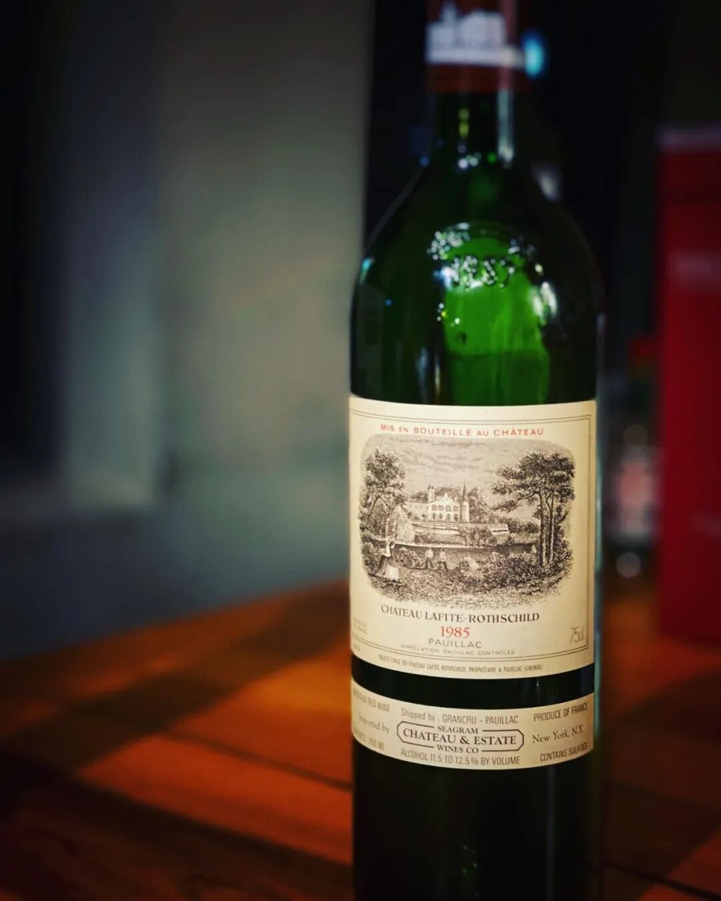
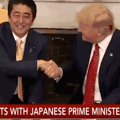
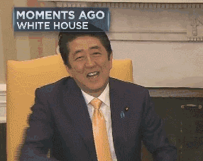
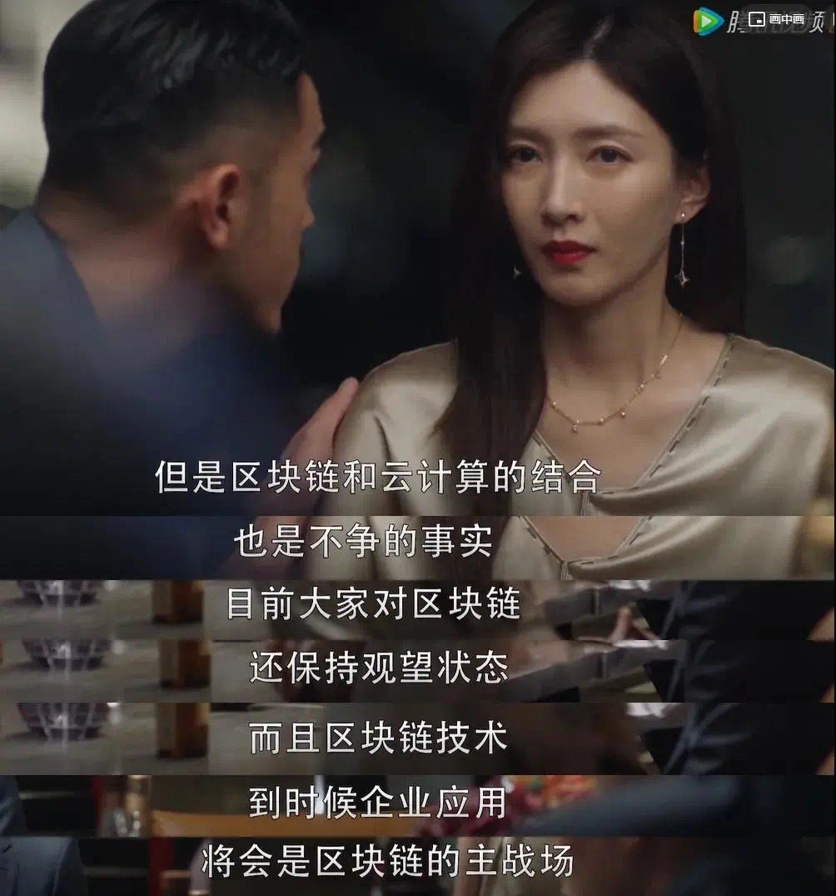

中年人酒局及股市生存手册
人到中年就分两类：
第一类：不会把红酒当啤酒一杯杯干掉的；
第二类：会。
所幸，今晚的酒局是由第一类中年人组成的，称之为 “人文型中年”。
“人文型中年” 是不可多得的宝藏。不论他们是投行骄子，资管之花，信托精英……你难免会在饭局上与他们狭路相逢。
若暂时没有遇上？没关系，在接下来的酒局中在所难免。
这周末上海的天清澈得万里无云，不出来混真是天理难容。于是，Z 先生带一瓶85年拉菲，小K 带一瓶Dalmore，古巴雪茄发烧友带来了 TRINIDAD，中年酒局初具雏形。

也许是为了逃避中年人酒局，95后妹子自称骨折了（详见3300点后的新老股民跑路指南）于是小K 秒换了一位律师做女伴。所谓“人文型中年” ，必须在某一生僻领域有过人之处，比如熟读欧洲史或精通律法。就像精英女律师谈及刑法时，会笑着纠正我们“被告”应被称为“被告人”。我一时不知该如何回应，好在根据《中年人酒局生存手册》第一条，我只需要吃着饭听他们说就行，别插嘴。谁让全是中年人的饭局，总是以吹牛逼为主。当然吹得太洋溢也不行，兄弟感情会破裂，一定要以诉苦为包装。Z 先生抱怨公司的CSR项目已经道德绑架了他三次，他被顶在杠头上，捐助了无数失学儿童。精英女律师哭诉要靠吃安眠药才能入睡，有一次为了献血停药，夜夜失眠。我没什么可说的，毕竟兄弟情和塑料姐妹花一样，不愿你过得太差，也不能过得比我太好。


其次，中年人不关注网络热点，资讯往往来自于朋友圈转发的二道信息源。比如最近热播的《三十而已》中年人会在酒局上自称看过（几个镜头），并感慨“没有铂金包合影就被裁”。
中年人们盼着我说更多细节，我立即顺着他们的既有印象进行强化——“爱马仕也就皮具值得买，配货的那些衣服和鞋履质量堪忧，设计也很普通”。最后少不了劝诫：“没有Birkin不是最可怕的，最可怕的是王漫妮听不懂区块链”！
这就形成一个完美的闭环，表达了我“人文至上”的价值观。酒局至此，相信你已经成为各位中年的心头爱。

最后，中年人的酒局如果在席间聊股票，都是被“内部消息荐股”割的韭菜。笑看美股风云的 Z 先生和小K，都自视为价值投资的忠实拥护者。他们在酒局上喜欢表达买的是长线，赚钱是其次，看好行业的明天。
只是常常一不小心，股民成了股东。
好在这样搞笑为主的酒局在11点前就结束了，我回到家还能借着酒意与我的男神 —— 财富峰值曾经相当于美国GDP 的10%的利弗莫尔聊聊天，他的《股票大作手操盘术》为股市中的中年人提供了一份生存手册，毕竟中年人自我改进的道路仅有两条，一条是从自己的经验和错误中领悟并吸取教训，另一条就是借助他人的思想和经历获得启发。
🥃
/ Chapter 7 /
关键点

耐心等待入市信号
他认为不论何时，只要耐心等到市场达到关键点后才动手，就总能从交易中心获利。这条准则，为他预期即将到来的重大市场运动提供了基本的指南。利弗莫尔最重视的是标志着行情启动的“心理时机”。他说：“在信号发出时果断入手，你就永远用不着为亏损而焦虑，之后唯一要做的就是静观其变。”
相反的是，如果错失行情，没有在开始时就入市，就丧失了大段利润储备，无法获得太大的收益。毕竟，这段利润，都是靠耐心和勇气获得的，市场必定会不时出现各种各样的小规模回落行情或回升行情，正如市场会在适当的时机向你发出正面入市信号，同样也会发出负面的出市信号。——只要你有足够的耐心等待。
“罗马不是一天建成的” ，没有哪个重大的市场运动会在一天或一周内一蹴而就，他需要一定的时间才能逐步完成“发生”、“发展”、“终结”的整个过程，而且大部分市场运动发生在整个过程的最后48小时内，这是最重要的持有头寸的时间，也就是说，这段时间内身处场内，很重要。
举个栗子：某只股票已经在下降趋势中运行了相当长时间，达到了40美元的低位，随后市场形成了一轮快速的回升行情，几天内涨到45美元。接着几周内始终在几个点的范围内横向波动，此后它又延续上一段行情，直至49美元高度。随后变得很沉闷，终于有一天它变得再度活跃起来，先跌3-4%，后来继续下滑接近其关键点40美元为止。正是此时此地，需要特别小心地观察市场，如果市场未能跌破40美元，这就是一个信号，一旦上涨3%左右， 就该买进。如果虽然跌破了40美元，但跌幅小不到3%左右，那么一旦上涨至43美元，也该买进。
危险信号运用关键点来预期市场运动的时候，有一点必须始终牢记：如果该股票在穿越关键点之后没有按照应有的模式运作（缺乏后续活力），就是一个必须密切关注的危险信号。市场很容易调转方向，因此应当当机立断，了结原有头寸。举个栗子：一只股票上市时可能以50美元、60美元、70美元美股的价格开盘，岁后因为被抛售套现而下跌20%左右，伺候在最高和最低点维持了1-2年。如果有一天该股成交价向下跌破历史低点，则很可能形成一轮巨幅下跌行情。为什么？因为该公司内部必定某个地方出了岔子。总之，股票从来就没有太高了不能买或太低了不能卖这回事。但进场后，如果第一手没给你利润，别进第二手。
没有牛市也没有熊市在阐述市场趋势的时候，利弗莫尔没有使用“牛”和“熊”两个词。因为他觉得一旦市场行情听到牛”或“熊”的说法，太多的人就会立即联想到市场将在一段非常长的时间里一直按照“牛市”或“熊市”方法运行。他宁愿使用“上升趋势”和“下降趋势”两个词，它们恰如其分地表达了市场在一定时间内即将发生的情形。如今这般特色鲜明的牛市并不经常发生，一般4-5年仅有一回。但没有发生此类行情的时候，还有很多持续时间相对较短但轮廓分明的趋势。例如，你最近在上升趋势买进，几周后，通过研究认为市场将转向下降趋势，没有牛市的定势思维，你更容易接受趋势逆转的事实。

亲力亲为在利弗莫尔的时代，还依靠电报机传送数据，他的数据记录类似Excel表格，而没有现代人用手机就能看折线图的便利，但他的方法依然具有典型性和简明性。当你养成记录股票行情的习惯，并结合考虑市场的时间要素，你就有能力发现许多关键点。但是，充分认识到借助关键点交易是需要耐心的，一定要自我训练，必须投入时间来研究行情，必须亲手选择数据，亲手填入记录本，亲手标记市场将在哪些价位到达关键点。
你会发觉，研究的过程像掘到了金矿，迷人得难以置信。通过内幕消息或者他人指导或许也能获利，但独立判断的成功交易，能带来更大的成就感。如果你独立发掘机会，独立自主地交易，耐心守候，密切注视危险信号，就能进入良性思维轨道。【持续连载，敬请期待】伟大的公司终将会衰落，而总有公司会变得伟大。嘿嘿，祝大家下个交易日好运。

2020.08.01
——
END